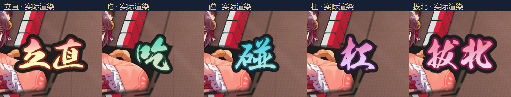
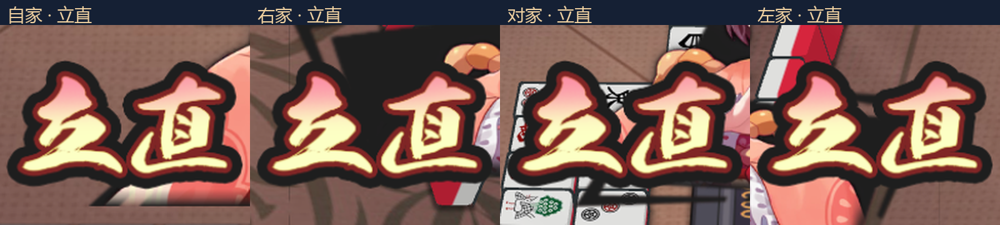
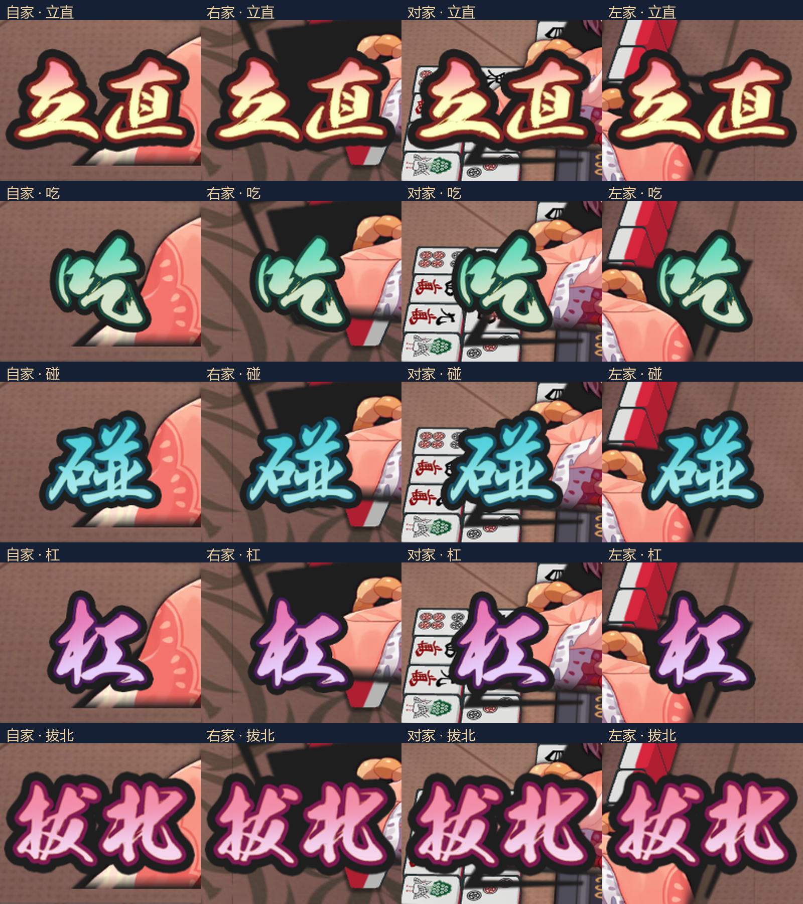
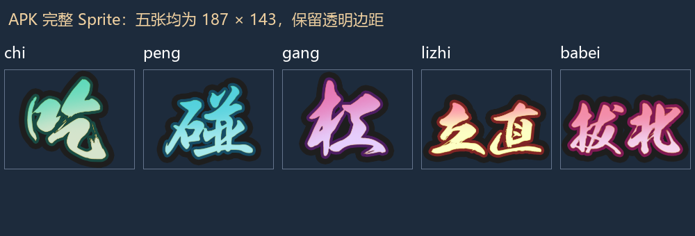
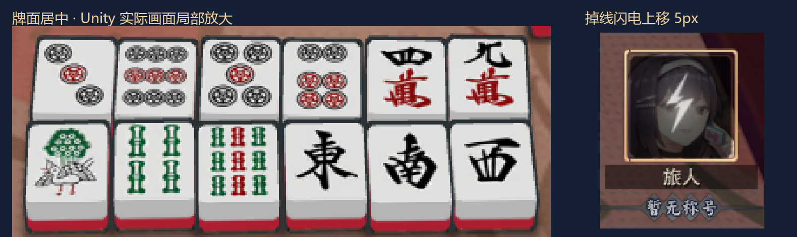
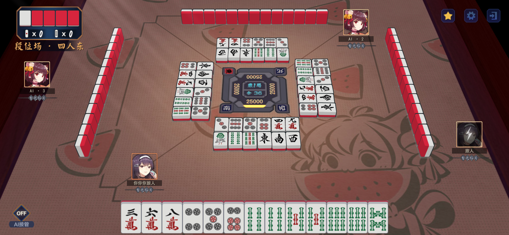
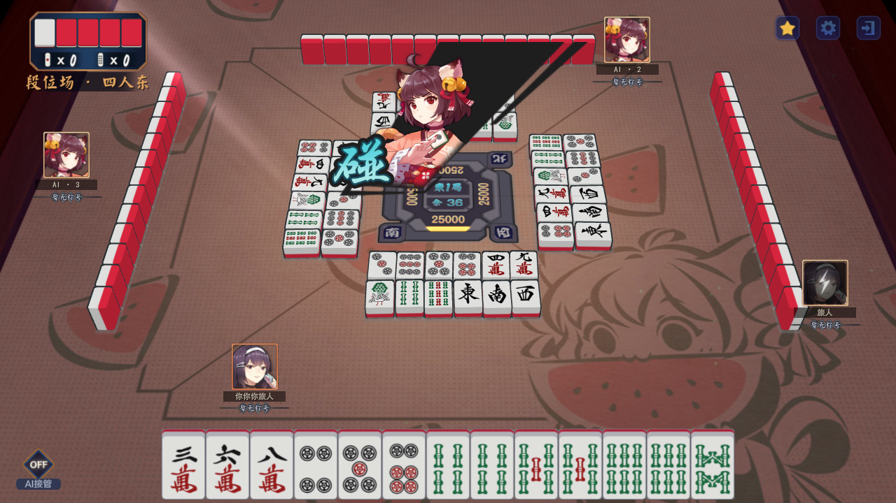
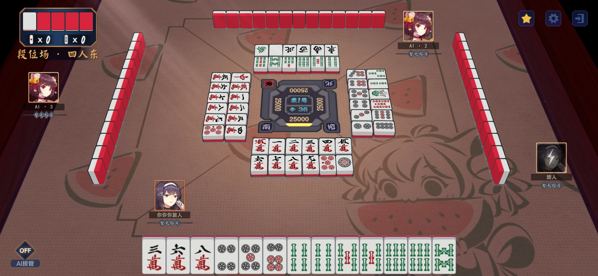

云间日麻 · 10月18日牌桌修改预览
均为修改后 Unity 实际渲染，使用固定演示牌局。视频为正常速度：立直、吃、碰、杠、拔北依次播放。仅效果预览，未生成安装包。
按每个字的可见高度统一大小：“立直、拔北”按原比例展开为双字宽度。相同提示在四个方向保持一致。保留原始完整图与透明边距，未拉伸字形。
单字与双字 · 同字号实际截图

四方向同字号 · 等倍率实际截图
每个局部均取自同分辨率画面的 200×160 像素区域，统一放大两倍。

展开五种文字的四方向对照

APK 原始 Sprite（边框表示完整画布）

四方位动作提示 · 同步视频
牌面居中与掉线闪电

点击图片查看原图。

每个方位的独立视频
自家（下方）：立直 → 吃 → 碰 → 杠 → 拔北右家（东方向视频）：立直 → 吃 → 碰 → 杠 → 拔北对家（北方向视频）：立直 → 吃 → 碰 → 杠 → 拔北左家（西方向视频）：立直 → 吃 → 碰 → 杠 → 拔北
三人场 · 拔北
16:9 画面

全部 37 种牌面 · 四方向展示

荣和 · 原有提示器四方向复核
自摸 · 原有提示器四方向复核